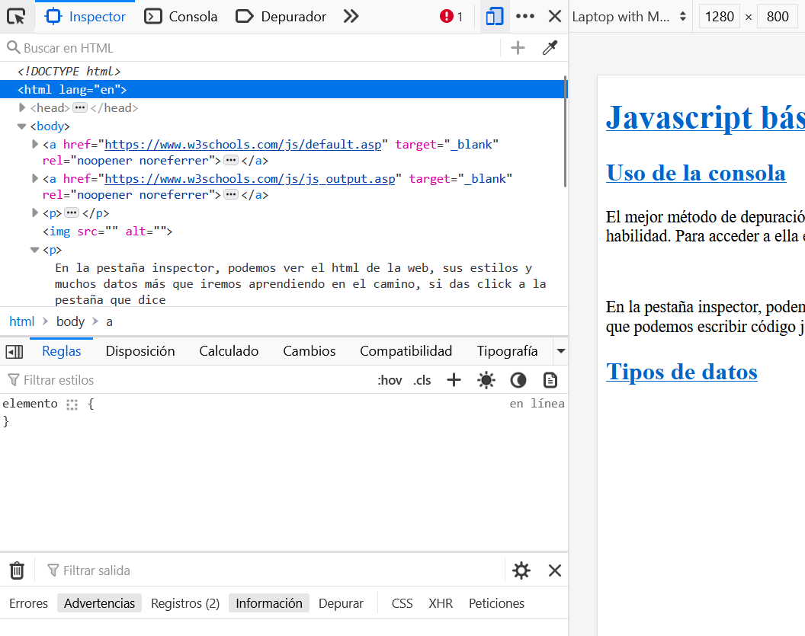
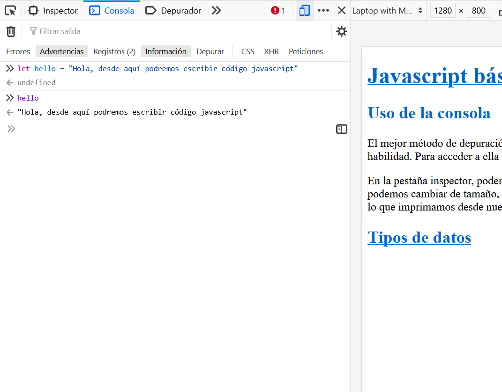

Javascript básico, parte I
Uso de la consola
El mejor método de depuración de Javascript es la consola, esto te permitirá saber todo lo que está haciendo tu programa, te recomiendo que la uses desde el principio para que vayas adquiriendo la habilidad. Para acceder a ella entras en cualquier
navegador y haces click derecho y te saldrá una opción de inspeccionar, al darle click, saldrá algo como esto:

En la pestaña inspector, podemos ver el html de la web, sus estilos y muchos datos más que iremos aprendiendo en el camino, a un lado (según como esté configurado) estará la vista de tu web que podemos cambiar de tamaño, por ejemplo ver como se vería
en móvil. Si das click a la pestaña que dice Consola tenemos una terminal en la que podemos escribir código javascript, también todo lo que imprimamos desde nuestros archivos de js y los errores que nos tire el programa, esto
luce así:

Para poder imprimir en la consola desde nuestros archivos de javascript, podemos usar la función console.log(), dentro del paréntesis pondremos lo que queremos imprimir.
Tipos de datos
En Javascript los tipos de datos se clasifican en 2, primitivos y objetos.
Primitivos
- String: es una secuencia de caracteres, usa comillas.
- Number: números enteros o decimales separados con un punto.
- BigInt: son grandes números, con una precisión mayor de 15 dígitos.
- Boolean: solo tiene dos valores, true o false (verdadero o falso).
- Undefined: una variable que no tiene valor, es de tipo undefined.
- Symbol: Este tipo de dato no lo usaremos pero te he dejado un recurso por si quieres indagar más.
- Null: primitivo especial, es un valor nulo o vacío y devuelve un objeto inválido.
Objetos
Los objetos se clasifican en 2, object y function
Object
- Date:es un objeto de tipo fecha que es estático.
- RegExp: es una expresión regular que es una secuencia de caracteres que forma un patrón de búsqueda.
- Error: son objetos que javaScript crea cuando ocurre alguno y tiene dos propiedades, nombre y mensaje.
- Array: un array o matriz es un dato especial que puede contener más de un valor, se declara con los [] y tienen índices numéricos y secuenciales que empiezan en 0.
- Object: un objeto puede contener varios valores y se diferencia de los arrays porque contienen pares de llave y valor (key - value), esto quiere decir que el índice puede ser una cadena de texto, se declara con {}
Function
- Function: es un bloque de código que ejecuta tareas, lo veremos más adelante.
- Class: son plantillas que sirven como molde para crear objetos, lo veremos más a profundidad cuando empecemos con programación orientada a objetos.
Variables
Una variable no es más que un espacio de almacenamiento en la memoria del programa, que contendrá valores a los que podremos acceder desde nuestro programa. Existen de 3 tipos:
- var: variable de alcance global.
- let: variable de alcance local.
- const: constante de alcance local.
Para escribir una variable existen unas reglas:
- Para declarar una variable empezamos por la palabra reservada var, let o const, seguido del nombre de la variable que por convención empezará en minúscula.
- El nombre deberá ser único en todo el programa.
- El nombre deberá ser descriptivo.
- Los nombres pueden contener letras, dígitos, guiones bajos y signos de dólar.
- Los nombres deben comenzar con una letra.
- Los nombres también pueden comenzar con $ y _
- Los nombres distinguen entre mayúsculas y minúsculas (case sensitives).
- Las palabras reservadas no se pueden utilizar como nombres.
Tipo de Operadores
Existen varios tipos de operadores, los que más utilizaremos son:
Ejercicios
Ahora que sabes un poco de la teoría de Javascript, lo pondremos en práctica, abre el archivo script.js desde tu visual studio code, que está dentro de esta misma carpeta y sigue los ejercicios que te propongo.